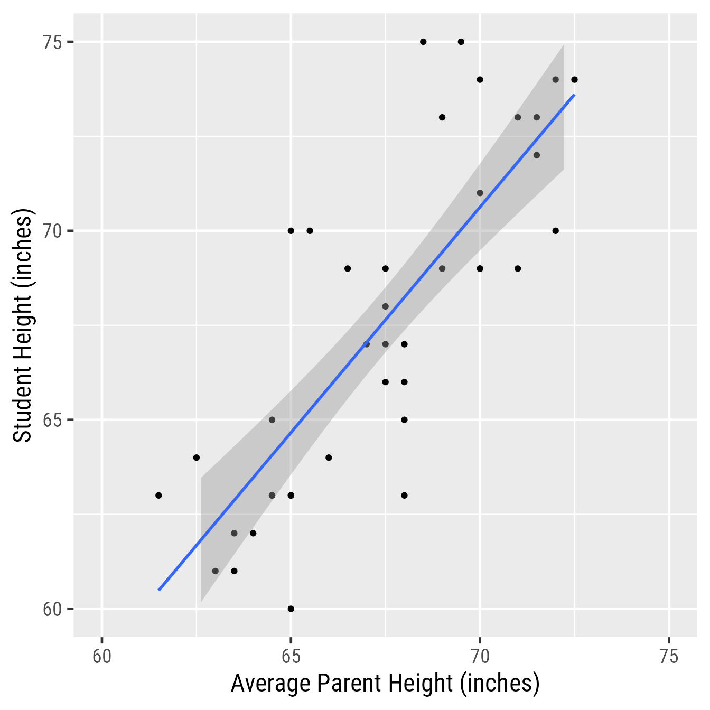
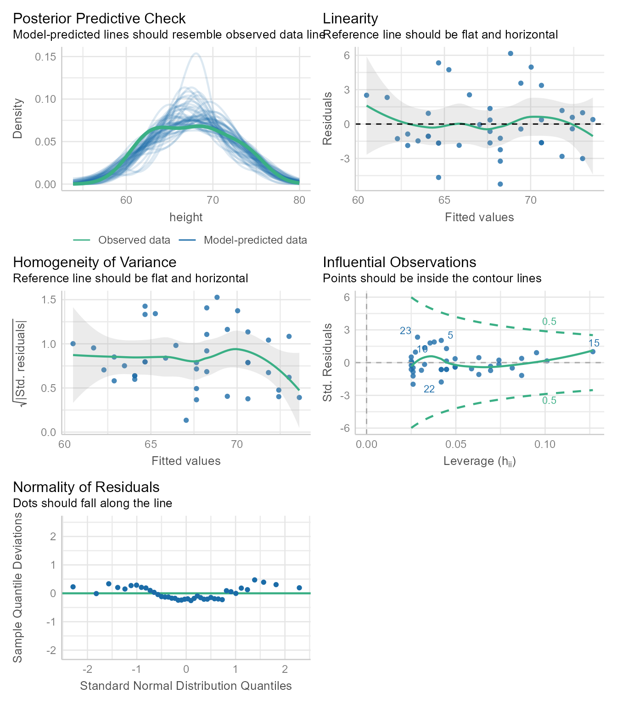
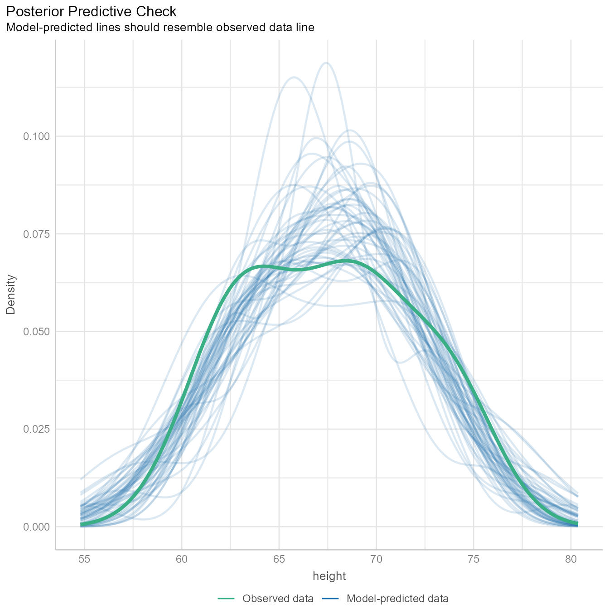
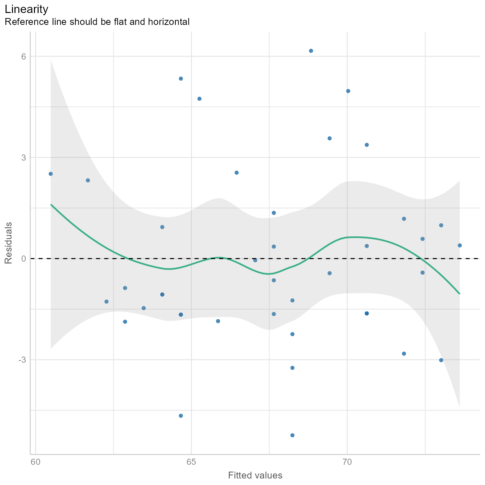
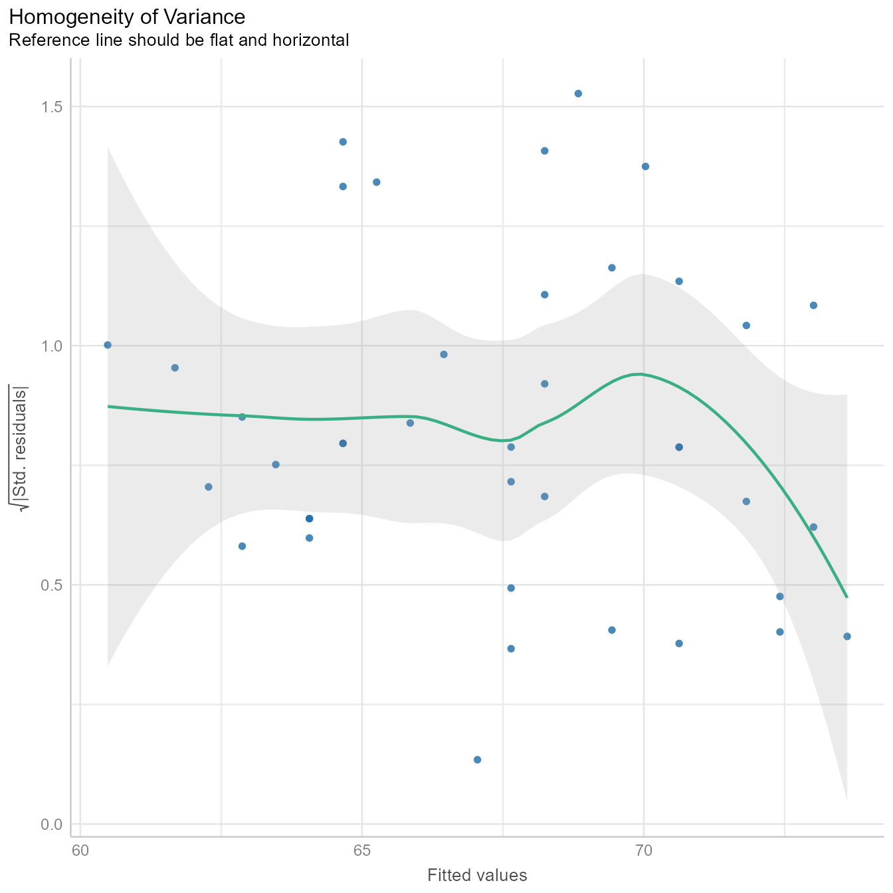
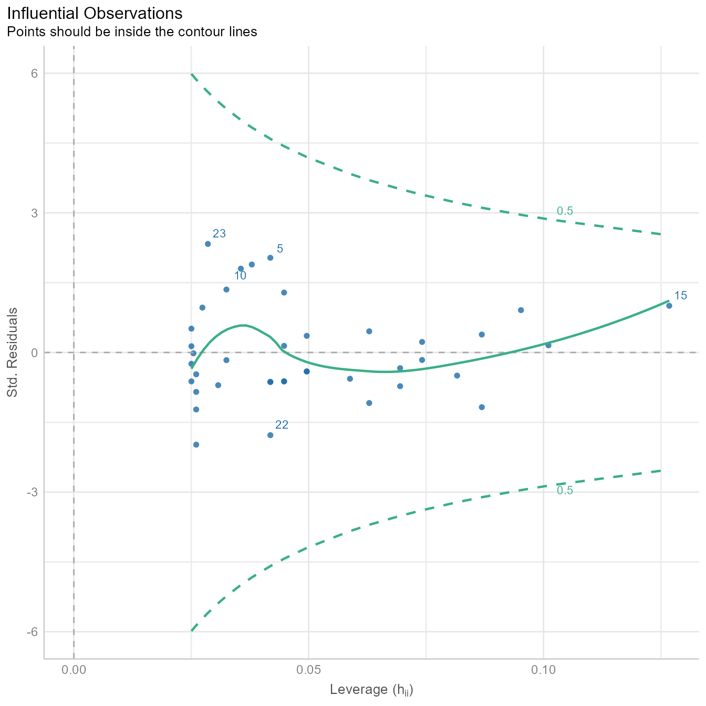
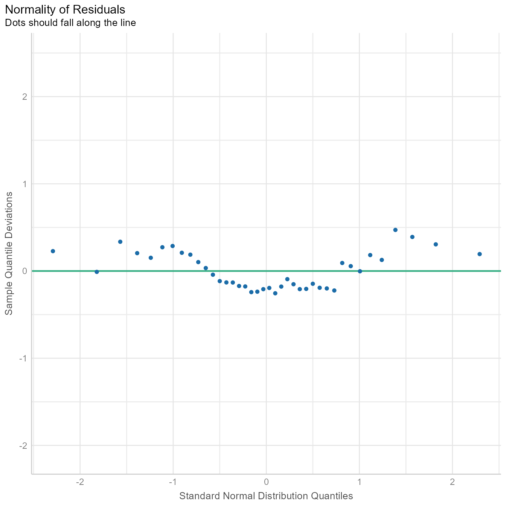
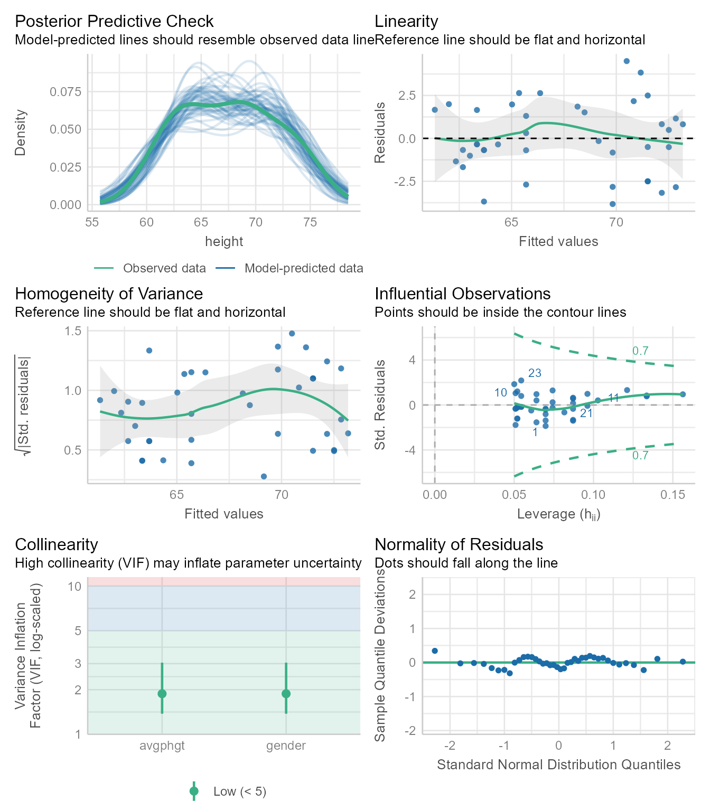

install.packages("tidyverse")Here we are going to use a small data set to predict people’s height using the height of their parents.
Install packages
An R package is software that extends the capabilities of R. To use a package, you must first install it on your machine. You only need to install it once.
Install tidyverse
Some packages are designed to work with several other packages as a system. The tidyverse package is a “meta-package” that installs and loads a coherent set of packages designed to help you import, manipulate, visualize, and interpret data. If you do not have a recent version of tidyverse already installed, you can install it with this code:
Install easystats
The easystats package is another “meta-package” that installs a set of packages designed to work together to make data analysis easier.
If you do not have a recent version of easystats already installed, you can install it with this code:
install.packages("easystats")Load packages
A package that is installed on your machine has additional functions that you can use. Each session, you can “load” a package with the library function:
library(tidyverse) # Loads primary packages for data wrangling and plotting
library(easystats) # Loads packages that make extracting data from model fit objects easierImport data
If I use only one data set in an analysis, I call it d. If I need multiple data sets, I use a d_ prefix to differentiate them. For example, if I have separate data sets for juniors and seniors, I might call them, d_juniors and d_seniors, respectively. This kind of consistency seems like extra work, but it pays off in making it easy for future-you to read and understand your own code.
You can import the height.csv data set directly from my github repository for this course. There is no need to save the data anywhere.
d <- read_csv("https://github.com/wjschne/EDUC5325/raw/master/height.csv")This code reaches across the web to the file in quotes, “reads” it into our session, and holds the data in a new variable we called d. Every time we need the data, we will get it from the d variable.
The head function, by default, displays the first 6 rows of a data.frame (a collection of variables in which all columns have the same number of rows) or tibble (a data.frame with various enhancements for printing and data creation).
head(d)| idnum | avgphgt | income | calcium | age | gender | weight | height | smoke15 |
|---|---|---|---|---|---|---|---|---|
| 1 | 67.5 | 36000 | 1000 | 22 | male | 203 | 66 | 4.35 |
| 2 | 70.0 | 45000 | 800 | 23 | male | 174 | 71 | 1.76 |
| 3 | 72.5 | 32000 | 750 | 19 | male | 223 | 74 | 0.00 |
| 4 | 66.5 | 55000 | 600 | 18 | male | 175 | 69 | 3.05 |
| 5 | 65.0 | 56000 | 450 | 21 | male | 144 | 70 | 0.00 |
| 6 | 72.0 | 100000 | 1200 | 34 | male | 219 | 74 | 0.00 |
Dataset variables
idnumAn identifying variable for each studentavgphgtAverage of parent heightincomeParental incomecalciumCalcium intakeageStudent agegenderStudent genderweightStudent weight (in pounds)heightStudent height (in inches)smoke15Number of cigarettes smoked per week
Make a plot
Let’s predict student height (height) from the average of their parents’ height (avgphgt).
Use the ggplot function from the ggplot2 package to make a scatterplot with points and a regression line in Figure 1.
ggplot(d, aes(avgphgt, height)) +
geom_point() +
geom_smooth(method = "lm")
Figure 2 gives an annotated explanation of what the code does.

Note that this plot is not quite presentation worthy. For example, Figure 3 improves upon Figure 1 by having proper axis labels, spacing the axis ticks, setting the aspect ratio to 1:1, and setting the font and font size to make .
ggplot(d, aes(avgphgt, height)) +
geom_point() +
geom_smooth(method = "lm") +
scale_x_continuous("Average Parent Height (inches)",
limits = c(60, 75)) +
scale_y_continuous("Student Height (inches)",
limits = c(60, 75)) +
coord_equal() +
theme_gray(base_family = "Roboto Condensed",
base_size = 18)

Save the plot!
You can save to your hard drive a high-quality plot with the ggsave function. It will save whatever the last plot you created with ggplot. It will guess the file format from the file extension.
Here I save a .pdf file of the plot to the working directory:
ggsave("my_plot.pdf")What is the working directory? Is the folder on your machine that R thinks it should look first if it needs to find files or save files. If you are ever curious about which directory is the working directory, you can see the current working directory with the getwd function:
getwd()If you saved the plot above as "my_plot.pdf", you will find the file in the working directory returned by getwd.
If you need to set the working working directly to something different from what it is, use the setwd function. In the Session menu in RStudio, you can also set the working directory with a point-an-click dialog box.
Vector-based images
The .pdf format gives the best image quality but can only be viewed in a .pdf reader. The .svg format is almost as good and can be incorporated into webpages and Office documents. One downside of their near-perfect image quality is that .pdf and .svg image file sizes can become quite large.
Raster images
The .png format gives good image quality and renders small file sizes. I prefer using the ragg::agg_png device to render a .png because it allows me to use any system font with no extra fuss.
ggsave("my_plot.png", device = ragg::agg_png)The primary use of the .gif format is to create animated plots. Otherwise stick with .png.
Although the .jpg format is good for photos, it is terrible for plots—it often renders text and sharp corners with pixelated smudges.
Creating the regression model
To run regression models, use the lm function. The lm stands for “linear model.” The general pattern is lm(Y~X, data = d), which means “Y is predicted by X, using the data set d.”
Here we predict height from Average of Parent Height (avgphgt):
m1 <- lm(height~avgphgt, data = d)Notice that we did not get any results. Instead, we created the model fit object m1, which contains information about the model. There are a variety of functions we can use to extract information from m1.
Checking assumptions
Regression assumes that the observations should independent, and the residuals should be normal and homoscedastic. The performance package has a great function for checking model assumptions: check_model
check_model(m1)

In Figure 4 we see that none of the assumptions have been severely violated. Normally, we would stop here. If needed, we can look at each plot one at a time.
Posterier Predictions
diagnostic_plots <- plot(check_model(m1, panel = FALSE))For confidence bands, please install `qqplotr`.diagnostic_plots[[1]]Ignoring unknown labels:
• size : ""

The Figure 5 generates several sets of random “simulated” data based on the model and plots the distributions as the thin blue lines. Each simulated data set is of the same size as the original data. The thicker green line is based on the observed data. If the blue lines have roughly the same shape as the green line, then the model is likely of the right form.
The green line is not that far off from the blue lines, but the green line appears to have 2 peaks, and most of the blue lines have one peak. Because we know that males and females have different mean heights, there is a good chance that we need to model their heights separately. We will do so later in the tutorial.
The tutorial for the check_model function gives an example of a posterior prediction check that signals that something is awry.
Linearity Assumption
diagnostic_plots[[2]]

In Figure 6, we see that the fitted values (i.e., \hat{Y} or predicted values) plotted against the residuals is roughly flat and horizontal. If the green line were clearly not flat, we would consider non-linear models.
Homogeneity of Variance Assumption
diagnostic_plots[[3]]

Figure 7 is similar to Figure 6 except that the fitted values are standardized (i.e., converted to z-scores) and then square root of their absolute values are plotted on the Y-axis. The homogeneity of variance assumption requires that variability of the residuals should be roughly the same across the entire distribution of fitted values. Thus, the line in Figure 7 should be roughly flat and horizontal, which it is. Indeed, we can draw a horizontal line entirely within the gray confidence region around the green line.
Influential Observations and Outlier Detection
diagnostic_plots[[4]]

Sometimes a single outlier can radically alter a regression model. The plot in Figure 8 shows how influential each point is in creating the regression model. If any point is outside the green dotted lines, we might worry that the point has had undue influence on the model.
Many additional outlier detection methods are available via the check_outliers function:
check_outliers(m1, method = "all")OK: No outliers detected.
- Based on the following methods and thresholds: zscore_robust (3.291), iqr (2), ci (1), cook (0.706), mahalanobis (13.816), mahalanobis_robust (13.816), mcd (13.816), ics (0.001), optics (4), lof (0.001).
- For variable: (Whole model)Normality Assumption
The normality assumption does not require that all variables be normal. It requires that the prediction residuals be approximately normal.
diagnostic_plots[[5]]

If the residuals were perfectly normal, the blue dots would fall exactly on the green line in Figure 9. The blue dots are not that far from the green line. Because ordinary least squares is robust to minor violations of the normality assumption, nothing in Figure 9 should make us worry about needing to model the data with some other kind of residuals.
If we suspect that the residuals are generated from a different distribution, the check_distribution function will estimate the probability that the residuals (and response/outcome variable) come from 12 major distribution families:
check_distribution(m1) | Distribution | p_Residuals | p_Response |
|---|---|---|
| bernoulli | 0.00000 | 0.00000 |
| beta | 0.03125 | 0.00000 |
| beta-binomial | 0.00000 | 0.40625 |
| binomial | 0.00000 | 0.40625 |
| cauchy | 0.09375 | 0.03125 |
| chi | 0.03125 | 0.03125 |
| exponential | 0.00000 | 0.00000 |
| F | 0.00000 | 0.00000 |
| gamma | 0.00000 | 0.00000 |
| half-cauchy | 0.00000 | 0.00000 |
| inverse-gamma | 0.00000 | 0.00000 |
| lognormal | 0.00000 | 0.00000 |
| neg. binomial (zero-infl.) | 0.00000 | 0.03125 |
| negative binomial | 0.06250 | 0.00000 |
| normal | 0.59375 | 0.03125 |
| pareto | 0.03125 | 0.00000 |
| poisson | 0.00000 | 0.00000 |
| poisson (zero-infl.) | 0.00000 | 0.03125 |
| tweedie | 0.15625 | 0.00000 |
| uniform | 0.00000 | 0.00000 |
| weibull | 0.00000 | 0.03125 |
plot(check_distribution(m1))
Here we see that of the 12 major distribution families tested, the residuals are more likely normal than any of the others. After we control for gender, this probability will increase. If the results had strongly suggested the residuals were generated from one of the other distributions, we might consider switching from a linear model to a generalized linear model.
Summarising results
Base R gives you most of what you would want to know about the regression results with the summary function:
summary(m1)
Call:
lm(formula = height ~ avgphgt, data = d)
Residuals:
Min 1Q Median 3Q Max
-5.241 -1.649 -0.539 1.224 6.163
Coefficients:
Estimate Std. Error t value Pr(>|t|)
(Intercept) -12.878 9.779 -1.317 0.196
avgphgt 1.193 0.145 8.230 5.7e-10 ***
---
Signif. codes: 0 '***' 0.001 '**' 0.01 '*' 0.05 '.' 0.1 ' ' 1
Residual standard error: 2.681 on 38 degrees of freedom
Multiple R-squared: 0.6406, Adjusted R-squared: 0.6311
F-statistic: 67.73 on 1 and 38 DF, p-value: 5.704e-10This output is not pretty, nor was it intended to be. It is designed for you, the analyst. The summary function’s print method is optimized for reading results in the console, not in a document. Presentation-worthy results need a lot more care and attention.
An automated report from the report package:
report::report(m1)We fitted a linear model (estimated using OLS) to predict height with avgphgt
(formula: height ~ avgphgt). The model explains a statistically significant and
substantial proportion of variance (R2 = 0.64, F(1, 38) = 67.73, p < .001, adj.
R2 = 0.63). The model's intercept, corresponding to avgphgt = 0, is at -12.88
(95% CI [-32.67, 6.92], t(38) = -1.32, p = 0.196). Within this model:
- The effect of avgphgt is statistically significant and positive (beta = 1.19,
95% CI [0.90, 1.49], t(38) = 8.23, p < .001; Std. beta = 0.80, 95% CI [0.60,
1.00])
Standardized parameters were obtained by fitting the model on a standardized
version of the dataset. 95% Confidence Intervals (CIs) and p-values were
computed using a Wald t-distribution approximation.Model-level statistics
Some statistics like the coefficient of determination (R2) or the standard error of the estimate (σe) describe the model as a whole.
R2
The R2 statistic measures the percentage of variance in the outcome explained by the predictors.
R^2=\frac{\sigma_{\hat{Y}}^2}{\sigma_{Y}^2}=1-\frac{\sigma_e^2}{\sigma_Y^2}
The model-level statistics can be extracted with the performance package’s model_performance function.
performance(m1)| AIC | AICc | BIC | R2 | R2_adjusted | RMSE | Sigma |
|---|---|---|---|---|---|---|
| 196.3596 | 197.0262 | 201.4262 | 0.640591 | 0.6311328 | 2.613149 | 2.681034 |
R2 is the percentage of variance in the outcome variable (i.e., Height) explained by the predictor variables (i.e., Average Parent Height). In Figure 10, the black line toggles between the best fitting regression line and the horizontal line running through the outcome variable’s mean. The vertical line segments running from each point to the black line are, on average, smaller for the best fitting regression line. Their squared distances shrink, on average, by 64%. Thus, we say that the predictor variance “explains” 64% of the variance in the outcome variable.
Code
r <- d %>% select(avgphgt, height) %>% cor() %>% `[[`(1, 2)
m <- d %>% select(avgphgt, height) %>% colMeans()
s <- d %>% select(avgphgt, height) %>% sapply(sd)
n <- 2
d_slope <- tibble(id = c("0.00", round(r^2, 2)),
r = seq(0, r, length.out = n)) %>%
mutate(i = -1 * r * m[1] * s[2] / s[1] + m[2],
b = r * s[2] / s[1])
library(gganimate)
anim <- d %>% select(idnum, avgphgt, height) %>%
crossing(d_slope) %>%
mutate(yhat = b * avgphgt + i,
Error = height - yhat) %>%
arrange(idnum, Error) %>%
ggplot(aes(avgphgt, height)) +
geom_abline(aes(slope = b, intercept = i)) +
geom_segment(aes(xend = avgphgt, yend = yhat, color = Error)) +
geom_point() +
transition_states(id, state_length = 3, transition_length = 1) +
scale_color_gradient2(
low = "royalblue4",
mid = "gray",
high = "firebrick4",
breaks = seq(-6, 6, 2),
labels = signs::signs
) +
scale_x_continuous("Average Parent Height (inches)", limits = c(60, 75)) +
scale_y_continuous("Student Height (inches)", limits = c(60, 75)) +
labs(title = "Variance Explained = {closest_state}") +
coord_equal() +
theme_minimal(base_family = "Roboto Condensed", base_size = 18) +
theme(
legend.text.position = "left",
legend.text = element_text(hjust = 1),
legend.key.height = unit(2, "cm")
)
gganimate::animate(
anim,
nframes = 50 * 4,
device = "ragg_png",
width = 10,
height = 10,
fps = 50,
res = 144
)
If all you wanted was the R2, you could do this:
performance(m1)$R2[1] 0.640591Why would you want just one number instead of reading it from a table? In reproducible research, we intermingle text and code so that it is clear where every number came from. Thus, “hard-coding” your results like this is considered poor practice:
The model explains 64% of the variance.Using rmarkdown, instead of typing the numeric results, we type pull the results using an inline code chunk:
The model explains `{r} round(100 * r2(m1)$R2, 0)`% of the variance.Which, when rendered, produces the correct output:
The model explains 64% of the variance.
That seems like a lot of extra work, right? Yes, it is—unless there is a possibility that your underlying data might change or that you might copy your numbers incorrectly. If you are imperfect, the extra time and effort is worth it. It makes it easy for other scholars to see exactly where each number came from. Hard-coded results are harder to trust.
Regression errors are the vertical distances of the outcome variable and regression line. That is, errors are the difference between the outcome and the predicted outcome:
e=Y-\hat{Y}
Standard Error of the Estimate (σe)
The standard error of the estimate (i.e., Sigma in the performance output table) is the standard deviation of the regression errors \sigma_{e}. It represents the typical size of the prediction error. That is, when we make a prediction, how far off is that prediction likely to be?
The standard error of the estimate can be extracted from a regression fit object with the sigma function:
sigma(m1)[1] 2.681034Alternately, it can be extracted from the performance function’s output:
performance(m1)$Sigma[1] 2.681034Coefficient-level statistics
The regression coefficients—the intercept (b0) and the slope (b1)—have a number of statistics associated with them, which we will discuss later in the course.
If you just wanted the intercept and the slope coefficients, use the coef function:
coef(m1)(Intercept) avgphgt
-12.878215 1.192926 Thus, the intercept is -12.88 and the slope is 1.19.
To get the model parameters (intercept and slope coefficients) along with their standard errors, confidence intervals, t statistics, and p-values:
parameters(m1) | Parameter | Coefficient | SE | CI | CI_low | CI_high | t | df_error | p |
|---|---|---|---|---|---|---|---|---|
| (Intercept) | -12.878215 | 9.7789931 | 0.95 | -32.674752 | 6.918321 | -1.316927 | 38 | 0.1957502 |
| avgphgt | 1.192926 | 0.1449525 | 0.95 | 0.899485 | 1.486367 | 8.229770 | 38 | 0.0000000 |
Standardized parameters are the regression coefficients if all variables in the analysis were standardized (i.e., convernted to z-scores). Standardized coefficients have a straightforward interpretation: They represent the predicted change in the outcome associated with a change of 1 standard deviation in the predictor variable.
standardize_parameters(m1)| Parameter | Std_Coefficient | CI | CI_low | CI_high |
|---|---|---|---|---|
| (Intercept) | 0.0000000 | 0.95 | -0.1944017 | 0.1944017 |
| avgphgt | 0.8003693 | 0.95 | 0.6034910 | 0.9972475 |
Multiple regression
In this data set, all participants self-identified as either male or female on the traditional gender binary. We would predict that males are, on average, taller than females.
By default, the first category in a factor or character (text) variable is the “reference level” that all other categories are compared to. In R, a factor can list categories in any order. In character variables, the categories are listed in alphabetical order. The gender variable consists of text, so the lm function puts the “female” category first and the “male” category second. Thus, the regression coefficient for gender will refer to how much “Males” differ from “Females,” on average. If want to do it the other way around, you can reverse the order of the levels and labels in the factor function. See also the fct_rev or fct_relevel function for other ways to do this.
We run the regression model with 2 predictors like so:
m2 <- lm(height ~ avgphgt + gender, data = d)Checking assumptions
check_model(m2)

The diagnostic plots in Figure 11 looks good. It has one additional plot checking the collinearity of the predictors. If any predictor is strongly predictable from the other predictors, it is difficult for ordinary least squares regression to locate the regression coefficients with precision. Why? Because the regression coefficients represent the independent effect of each variable controlling for all the other variables. If a predictor has little variability left after controlling for the other variables, estimating its independent effect is difficult, which is manifest in “inflated” standardized errors around the coefficient. The VIF (variance inflation factor) statistic estimates how much the standard errors are made large due to collinearity. If the VIF is larger than 10 or so, it is likely that the estimate of the coefficient is not precise.
Summarizing results
To summarize the results, use the summary function:
summary(m2)
Call:
lm(formula = height ~ avgphgt + gender, data = d)
Residuals:
Min 1Q Median 3Q Max
-3.8260 -1.0937 -0.3465 1.6563 4.5035
Coefficients:
Estimate Std. Error t value Pr(>|t|)
(Intercept) 20.0986 10.3035 1.951 0.058704 .
avgphgt 0.6705 0.1574 4.260 0.000134 ***
gendermale 4.4680 0.9205 4.854 2.21e-05 ***
---
Signif. codes: 0 '***' 0.001 '**' 0.01 '*' 0.05 '.' 0.1 ' ' 1
Residual standard error: 2.124 on 37 degrees of freedom
Multiple R-squared: 0.7804, Adjusted R-squared: 0.7685
F-statistic: 65.75 on 2 and 37 DF, p-value: 6.603e-13Model-level statistics:
performance(m2)| AIC | AICc | BIC | R2 | R2_adjusted | RMSE | Sigma |
|---|---|---|---|---|---|---|
| 178.6511 | 179.7939 | 185.4066 | 0.780413 | 0.7685434 | 2.042551 | 2.123744 |
Coefficient-level statistics:
parameters(m2)| Parameter | Coefficient | SE | CI | CI_low | CI_high | t | df_error | p |
|---|---|---|---|---|---|---|---|---|
| (Intercept) | 20.0985997 | 10.3035446 | 0.95 | -0.7783648 | 40.9755641 | 1.950649 | 37 | 0.0587039 |
| avgphgt | 0.6705107 | 0.1573791 | 0.95 | 0.3516303 | 0.9893911 | 4.260480 | 37 | 0.0001345 |
| gendermale | 4.4679572 | 0.9204998 | 0.95 | 2.6028475 | 6.3330669 | 4.853838 | 37 | 0.0000221 |
Standardized coefficients:
standardize_parameters(m2)| Parameter | Std_Coefficient | CI | CI_low | CI_high |
|---|---|---|---|---|
| (Intercept) | -0.5060712 | 0.95 | -0.7675756 | -0.2445668 |
| avgphgt | 0.4498654 | 0.95 | 0.2359191 | 0.6638117 |
| gendermale | 1.0121425 | 0.95 | 0.5896324 | 1.4346525 |
An automated report:
report(m2)We fitted a linear model (estimated using OLS) to predict height with avgphgt
and gender (formula: height ~ avgphgt + gender). The model explains a
statistically significant and substantial proportion of variance (R2 = 0.78,
F(2, 37) = 65.75, p < .001, adj. R2 = 0.77). The model's intercept,
corresponding to avgphgt = 0 and gender = female, is at 20.10 (95% CI [-0.78,
40.98], t(37) = 1.95, p = 0.059). Within this model:
- The effect of avgphgt is statistically significant and positive (beta = 0.67,
95% CI [0.35, 0.99], t(37) = 4.26, p < .001; Std. beta = 0.45, 95% CI [0.24,
0.66])
- The effect of gender [male] is statistically significant and positive (beta =
4.47, 95% CI [2.60, 6.33], t(37) = 4.85, p < .001; Std. beta = 1.01, 95% CI
[0.59, 1.43])
Standardized parameters were obtained by fitting the model on a standardized
version of the dataset. 95% Confidence Intervals (CIs) and p-values were
computed using a Wald t-distribution approximation.Comparing models
In the first model, there was only one predictor. The second model had an additional predictor. To test whether the second predictor has incremental validity (predicts variance in the outcome beyond what is predicted by other predictors), we can compare the two models using the Wald test:
test_wald(m1, m2)| Name | Model | df | df_diff | F | p |
|---|---|---|---|---|---|
| m1 | lm | 38 | NA | NA | NA |
| m2 | lm | 37 | 1 | 23.55975 | 2.21e-05 |
The Wald test can also be conducted in base R with the anova function:
anova(m1, m2)| Res.Df | RSS | Df | Sum of Sq | F | Pr(>F) |
|---|---|---|---|---|---|
| 38 | 273.1419 | NA | NA | NA | NA |
| 37 | 166.8806 | 1 | 106.2612 | 23.55975 | 2.21e-05 |
Either way, the p-value is significant, meaning that m2 explains more variance than m1.
The semi-partial correlation coefficient squared tells us how much incremental variance each predictor has over the other:
r2_semipartial(m2)| Term | r2_semipartial | CI | CI_low | CI_high |
|---|---|---|---|---|
| avgphgt | 0.1077264 | 0.95 | 0.0192805 | 1 |
| gender | 0.1398220 | 0.95 | 0.0371881 | 1 |
Thus, gender explains 14% variance beyond avgphgt. Likewise, avgphgt explains 11% variance beyond gender.
Bayes Factors
An alternate method of comparing two models uses the Bayes factor. It tells us under which model the observed data are more probable.
test_bf(m1, m2)| Model | log_BF | BF |
|---|---|---|
| avgphgt | NA | NA |
| avgphgt + gender | 8.009811 | 3010.348 |
A BF > 1 means that m2 is more strongly supported than m1. A BF < 1 means that m1 is more strongly supported than m2. If you are not sure how to interpret the output of test_bf, you can get an automated interpretation:
test_bf(m1, m2) %>%
report()Bayes factors were computed using the BIC approximation, by which BF10 =
exp((BIC0 - BIC1)/2). Compared to the avgphgt model, we found extreme evidence
(BF = 3.01e+03) in favour of the avgphgt + gender model (the least supported
model).To compare many performance statistics at once:
compare_performance(m1, m2) | Name | Model | AIC | AIC_wt | AICc | AICc_wt | BIC | BIC_wt | R2 | R2_adjusted | RMSE | Sigma |
|---|---|---|---|---|---|---|---|---|---|---|---|
| m1 | lm | 196.3596 | 0.0001428 | 197.0262 | 0.0001811 | 201.4262 | 0.0003321 | 0.640591 | 0.6311328 | 2.613149 | 2.681034 |
| m2 | lm | 178.6511 | 0.9998572 | 179.7939 | 0.9998189 | 185.4066 | 0.9996679 | 0.780413 | 0.7685434 | 2.042551 | 2.123744 |
Pretty Regression Tables
There are several packages that automate the production of pretty regression tables. There is a trade-off here between ease of use and getting exactly what you want. If you are okay with a function’s defaults and the programmer’s choices, then there is no problem. If you want full control of the display, you are best off creating your own functions or adapting existing functions.
The tab_model function in sjPlot looks great as is, but if it gives you too much or not enough, check out its options to see if it can do what you want.
Show a single model
sjPlot::tab_model(m1)| height | |||
|---|---|---|---|
| Predictors | Estimates | CI | p |
| (Intercept) | -12.88 | -32.67 – 6.92 | 0.196 |
| avgphgt | 1.19 | 0.90 – 1.49 | <0.001 |
| Observations | 40 | ||
| R2 / R2 adjusted | 0.641 / 0.631 | ||
Compare nested models
sjPlot::tab_model(m1, m2)| height | height | |||||
|---|---|---|---|---|---|---|
| Predictors | Estimates | CI | p | Estimates | CI | p |
| (Intercept) | -12.88 | -32.67 – 6.92 | 0.196 | 20.10 | -0.78 – 40.98 | 0.059 |
| avgphgt | 1.19 | 0.90 – 1.49 | <0.001 | 0.67 | 0.35 – 0.99 | <0.001 |
| gender [male] | 4.47 | 2.60 – 6.33 | <0.001 | |||
| Observations | 40 | 40 | ||||
| R2 / R2 adjusted | 0.641 / 0.631 | 0.780 / 0.769 | ||||
library(gtsummary)
# Plain table
tbl_regression(m1)| Characteristic | Beta | 95% CI | p-value |
|---|---|---|---|
| avgphgt | 1.2 | 0.90, 1.5 | <0.001 |
| Abbreviation: CI = Confidence Interval | |||
# Merging tables
tbl_merge(tbls = list(tbl_regression(m1) %>% add_glance_table(),
tbl_regression(m2) %>% add_glance_table()),
tab_spanner = c("Parent Height", "Parent Height + Gender")) The number rows in the tables to be merged do not match, which may result in
rows appearing out of order.
ℹ See `tbl_merge()` (`?gtsummary::tbl_merge()`) help file for details. Use
`quiet=TRUE` to silence message.| Characteristic |
Parent Height
|
Parent Height + Gender
|
||||
|---|---|---|---|---|---|---|
| Beta | 95% CI | p-value | Beta | 95% CI | p-value | |
| avgphgt | 1.2 | 0.90, 1.5 | <0.001 | 0.67 | 0.35, 0.99 | <0.001 |
| R² | 0.641 | 0.780 | ||||
| Adjusted R² | 0.631 | 0.769 | ||||
| Sigma | 2.68 | 2.12 | ||||
| Statistic | 67.7 | 65.7 | ||||
| p-value | <0.001 | <0.001 | ||||
| df | 1 | 2 | ||||
| Log-likelihood | -95.2 | -85.3 | ||||
| AIC | 196 | 179 | ||||
| BIC | 201 | 185 | ||||
| Deviance | 273 | 167 | ||||
| Residual df | 38 | 37 | ||||
| No. Obs. | 40 | 40 | ||||
| gender | ||||||
| female | — | — | ||||
| male | 4.5 | 2.6, 6.3 | <0.001 | |||
| Abbreviation: CI = Confidence Interval | ||||||
# Stacking tables
tbl_stack(list(tbl_regression(m1), tbl_regression(m2)),
group_header = c("Parent Height", "Parent Height + Gender"))| Characteristic | Beta | 95% CI | p-value |
|---|---|---|---|
| Parent Height | |||
| avgphgt | 1.2 | 0.90, 1.5 | <0.001 |
| Parent Height + Gender | |||
| avgphgt | 0.67 | 0.35, 0.99 | <0.001 |
| gender | |||
| female | — | — | |
| male | 4.5 | 2.6, 6.3 | <0.001 |
| Abbreviation: CI = Confidence Interval | |||
parameters(m2) %>%
rempsyc::nice_table()Parameter | b | SE | CI | t | df | p | 95% CI |
|---|---|---|---|---|---|---|---|
(Intercept) | 20.10 | 10.30 | 0.95 | 1.95 | 37 | .059 | [-0.78, 40.98] |
avgphgt | 0.67 | 0.16 | 0.95 | 4.26 | 37 | < .001*** | [0.35, 0.99] |
gendermale | 4.47 | 0.92 | 0.95 | 4.85 | 37 | < .001*** | [2.60, 6.33] |
m2 %>%
report_table() %>%
rempsyc::nice_table()Parameter | b | CI | t | df | p | b* | Fit | 95% CI (b*) | 95% CI |
|---|---|---|---|---|---|---|---|---|---|
(Intercept) | 20.10 | 0.95 | 1.95 | 37 | .059 | -0.51 | [-0.77, -0.24] | [-0.78, 40.98] | |
avgphgt | 0.67 | 0.95 | 4.26 | 37 | < .001*** | 0.45 | [0.24, 0.66] | [0.35, 0.99] | |
gender [male] | 4.47 | 0.95 | 4.85 | 37 | < .001*** | 1.01 | [0.59, 1.43] | [2.60, 6.33] | |
AIC | 178.65 | ||||||||
AICc | 179.79 | ||||||||
BIC | 185.41 | ||||||||
R2 | 0.78 | ||||||||
R2 (adj.) | 0.77 | ||||||||
Sigma | 2.12 |
A primary advantage of the flextable package is that it is compatible with MS Word’s .docx format as well as .html and .pdf.
m2 %>%
flextable::as_flextable()Estimate | Standard Error | t value | Pr(>|t|) | ||
|---|---|---|---|---|---|
(Intercept) | 20.099 | 10.304 | 1.951 | 0.0587 | . |
avgphgt | 0.671 | 0.157 | 4.260 | 0.0001 | *** |
gendermale | 4.468 | 0.920 | 4.854 | 0.0000 | *** |
Signif. codes: 0 <= '***' < 0.001 < '**' < 0.01 < '*' < 0.05 | |||||
Residual standard error: 2.124 on 37 degrees of freedom | |||||
Multiple R-squared: 0.7804, Adjusted R-squared: 0.7685 | |||||
F-statistic: 65.75 on 37 and 2 DF, p-value: 0.0000 | |||||
Case-level Statistics
A great deal of information can be extracted about each row in your data. Perhaps the most important among these are the predicted value of the outcome variable and the error/residual. The estimate_prediction function gives these values, as well as the standard error around the prediction and the 95% confidence interval.
estimate_prediction(m1)| avgphgt | Predicted | SE | CI_low | CI_high | Residuals |
|---|---|---|---|---|---|
| 67.5 | 67.64429 | 2.714379 | 62.14932 | 73.13927 | -1.6442926 |
| 70.0 | 70.62661 | 2.740379 | 65.07900 | 76.17422 | 0.3733923 |
| 72.5 | 73.60892 | 2.813209 | 67.91388 | 79.30397 | 0.3910772 |
| 66.5 | 66.45137 | 2.717473 | 60.95013 | 71.95260 | 2.5486334 |
| 65.0 | 64.66198 | 2.736543 | 59.12214 | 70.20182 | 5.3380225 |
| 72.0 | 73.01246 | 2.795039 | 67.35420 | 78.67072 | 0.9875402 |
| 71.0 | 71.81953 | 2.764046 | 66.22402 | 77.41505 | 1.1804662 |
| 70.0 | 70.62661 | 2.740379 | 65.07900 | 76.17422 | -1.6266077 |
| 71.0 | 71.81953 | 2.764046 | 66.22402 | 77.41505 | -2.8195338 |
| 69.5 | 70.03014 | 2.731355 | 64.50080 | 75.55948 | 4.9698553 |
| 69.0 | 69.43368 | 2.724230 | 63.91877 | 74.94860 | -0.4336817 |
| 67.5 | 67.64429 | 2.714379 | 62.14932 | 73.13927 | -0.6442926 |
| 71.5 | 72.41600 | 2.778640 | 66.79093 | 78.04106 | 0.5840032 |
| 70.0 | 70.62661 | 2.740379 | 65.07900 | 76.17422 | 3.3733923 |
| 61.5 | 60.48674 | 2.845882 | 54.72555 | 66.24792 | 2.5132637 |
| 68.0 | 68.24076 | 2.715733 | 62.74304 | 73.73847 | -1.2407556 |
| 62.5 | 61.67966 | 2.805730 | 55.99976 | 67.35957 | 2.3203376 |
| 63.0 | 62.27613 | 2.788265 | 56.63158 | 67.92067 | -1.2761254 |
| 65.5 | 65.25844 | 2.728277 | 59.73533 | 70.78155 | 4.7415595 |
| 68.0 | 68.24076 | 2.715733 | 62.74304 | 73.73847 | -2.2407556 |
| 72.0 | 73.01246 | 2.795039 | 67.35420 | 78.67072 | -3.0124598 |
| 65.0 | 64.66198 | 2.736543 | 59.12214 | 70.20182 | -4.6619775 |
| 68.5 | 68.83722 | 2.719019 | 63.33285 | 74.34159 | 6.1627814 |
| 69.0 | 69.43368 | 2.724230 | 63.91877 | 74.94860 | 3.5663183 |
| 68.0 | 68.24076 | 2.715733 | 62.74304 | 73.73847 | -5.2407556 |
| 65.0 | 64.66198 | 2.736543 | 59.12214 | 70.20182 | -1.6619775 |
| 67.5 | 67.64429 | 2.714379 | 62.14932 | 73.13927 | 1.3557074 |
| 64.5 | 64.06551 | 2.746697 | 58.50512 | 69.62591 | 0.9344855 |
| 66.0 | 65.85490 | 2.721916 | 60.34467 | 71.36513 | -1.8549035 |
| 70.0 | 70.62661 | 2.740379 | 65.07900 | 76.17422 | -1.6266077 |
| 68.0 | 68.24076 | 2.715733 | 62.74304 | 73.73847 | -3.2407556 |
| 65.0 | 64.66198 | 2.736543 | 59.12214 | 70.20182 | -1.6619775 |
| 67.5 | 67.64429 | 2.714379 | 62.14932 | 73.13927 | 0.3557074 |
| 64.5 | 64.06551 | 2.746697 | 58.50512 | 69.62591 | -1.0655145 |
| 64.0 | 63.46905 | 2.758719 | 57.88432 | 69.05379 | -1.4690514 |
| 63.5 | 62.87259 | 2.772584 | 57.25978 | 68.48539 | -1.8725884 |
| 67.0 | 67.04783 | 2.714959 | 61.55168 | 72.54398 | -0.0478296 |
| 64.5 | 64.06551 | 2.746697 | 58.50512 | 69.62591 | -1.0655145 |
| 63.5 | 62.87259 | 2.772584 | 57.25978 | 68.48539 | -0.8725884 |
| 71.5 | 72.41600 | 2.778640 | 66.79093 | 78.04106 | -0.4159968 |
The augment function from the broom package gives the predicted value (.fitted), the residual (.resid), the residual converted to a standardized z-score (.std.resid), Cook’s distance (.cooksd) to identify influential cases, hat values (.hat) to identify cases that have leverage (i.e., the potential to be influential), and .sigma (the estimated residual standard deviation when the corresponding observation is dropped from the model).
broom::augment(m1)| height | avgphgt | .fitted | .resid | .hat | .sigma | .cooksd | .std.resid |
|---|---|---|---|---|---|---|---|
| 66 | 67.5 | 67.64429 | -1.6442926 | 0.0250292 | 2.703195 | 0.0049521 | -0.6211278 |
| 71 | 70.0 | 70.62661 | 0.3733923 | 0.0447603 | 2.716297 | 0.0004757 | 0.1424974 |
| 74 | 72.5 | 73.60892 | 0.3910772 | 0.1010304 | 2.716176 | 0.0013300 | 0.1538465 |
| 69 | 66.5 | 66.45137 | 2.5486334 | 0.0273677 | 2.683602 | 0.0130714 | 0.9638971 |
| 70 | 65.0 | 64.66198 | 5.3380225 | 0.0418372 | 2.564852 | 0.0903254 | 2.0340349 |
| 74 | 72.0 | 73.01246 | 0.9875402 | 0.0868533 | 2.711706 | 0.0070661 | 0.3854625 |
| 73 | 71.0 | 71.81953 | 1.1804662 | 0.0628837 | 2.709617 | 0.0069410 | 0.4548356 |
| 69 | 70.0 | 70.62661 | -1.6266077 | 0.0447603 | 2.703212 | 0.0090282 | -0.6207608 |
| 69 | 71.0 | 71.81953 | -2.8195338 | 0.0628837 | 2.674497 | 0.0395978 | -1.0863711 |
| 75 | 69.5 | 70.03014 | 4.9698553 | 0.0378910 | 2.586188 | 0.0703299 | 1.8898583 |
| 69 | 69.0 | 69.43368 | -0.4336817 | 0.0324832 | 2.716056 | 0.0004540 | -0.1644521 |
| 67 | 67.5 | 67.64429 | -0.6442926 | 0.0250292 | 2.714904 | 0.0007603 | -0.2433801 |
| 73 | 71.5 | 72.41600 | 0.5840032 | 0.0741377 | 2.715190 | 0.0020518 | 0.2263808 |
| 74 | 70.0 | 70.62661 | 3.3733923 | 0.0447603 | 2.657111 | 0.0388300 | 1.2873846 |
| 63 | 61.5 | 60.48674 | 2.5132637 | 0.1267539 | 2.680805 | 0.0730347 | 1.0031534 |
| 67 | 68.0 | 68.24076 | -1.2407556 | 0.0260523 | 2.709150 | 0.0029411 | -0.4689387 |
| 64 | 62.5 | 61.67966 | 2.3203376 | 0.0951842 | 2.687265 | 0.0435424 | 0.9098478 |
| 61 | 63.0 | 62.27613 | -1.2761254 | 0.0815916 | 2.708189 | 0.0109579 | -0.4966759 |
| 70 | 65.5 | 65.25844 | 4.7415595 | 0.0355525 | 2.598496 | 0.0597751 | 1.8008583 |
| 66 | 68.0 | 68.24076 | -2.2407556 | 0.0260523 | 2.691260 | 0.0095924 | -0.8468848 |
| 70 | 72.0 | 73.01246 | -3.0124598 | 0.0868533 | 2.667136 | 0.0657526 | -1.1758411 |
| 60 | 65.0 | 64.66198 | -4.6619775 | 0.0418372 | 2.601761 | 0.0688953 | -1.7764303 |
| 75 | 68.5 | 68.83722 | 6.1627814 | 0.0285370 | 2.515070 | 0.0798867 | 2.3321757 |
| 73 | 69.0 | 69.43368 | 3.5663183 | 0.0324832 | 2.650835 | 0.0307006 | 1.3523481 |
| 63 | 68.0 | 68.24076 | -5.2407556 | 0.0260523 | 2.572945 | 0.0524721 | -1.9807230 |
| 63 | 65.0 | 64.66198 | -1.6619775 | 0.0418372 | 2.702647 | 0.0087559 | -0.6332907 |
| 69 | 67.5 | 67.64429 | 1.3557074 | 0.0250292 | 2.707631 | 0.0033664 | 0.5121154 |
| 65 | 64.5 | 64.06551 | 0.9344855 | 0.0495835 | 2.712449 | 0.0033344 | 0.3575306 |
| 64 | 66.0 | 65.85490 | -1.8549035 | 0.0307293 | 2.699310 | 0.0078284 | -0.7027429 |
| 69 | 70.0 | 70.62661 | -1.6266077 | 0.0447603 | 2.703212 | 0.0090282 | -0.6207608 |
| 65 | 68.0 | 68.24076 | -3.2407556 | 0.0260523 | 2.662850 | 0.0200647 | -1.2248309 |
| 63 | 65.0 | 64.66198 | -1.6619775 | 0.0418372 | 2.702647 | 0.0087559 | -0.6332907 |
| 68 | 67.5 | 67.64429 | 0.3557074 | 0.0250292 | 2.716377 | 0.0002317 | 0.1343677 |
| 63 | 64.5 | 64.06551 | -1.0655145 | 0.0495835 | 2.711075 | 0.0043350 | -0.4076618 |
| 62 | 64.0 | 63.46905 | -1.4690514 | 0.0587913 | 2.705595 | 0.0099628 | -0.5647961 |
| 61 | 63.5 | 62.87259 | -1.8725884 | 0.0694607 | 2.698215 | 0.0195668 | -0.7240568 |
| 67 | 67.0 | 67.04783 | -0.0478296 | 0.0254677 | 2.717011 | 0.0000043 | -0.0180716 |
| 63 | 64.5 | 64.06551 | -1.0655145 | 0.0495835 | 2.711075 | 0.0043350 | -0.4076618 |
| 62 | 63.5 | 62.87259 | -0.8725884 | 0.0694607 | 2.712950 | 0.0042487 | -0.3373958 |
| 72 | 71.5 | 72.41600 | -0.4159968 | 0.0741377 | 2.716093 | 0.0010411 | -0.1612555 |
The idea of leverage can be found in Figure 12. When the red dot has an extreme value of x, it can easily alter where the regression line will be, depending on the value of y. That is, extreme values of x have leverage. When the red dot has a value of x in the middle, the value of y will have little effect on the location of the regression line. Thus, values of x near the mean have little leverage. When there are multiple predictors, the hat values help spot cases with leverage even though a visualization is not always possible.

All the code in one place:
The preceding analyses might seem like a lot, but it is not really so much when you see it all in just a few lines of code. Here are all the main analyses:
# Load packages
library(tidyverse)
library(easystats)
# Import data
d <- read_csv("https://github.com/wjschne/EDUC5325/raw/master/height.csv")
# Plot data
ggplot(d, aes(weight,height)) +
geom_point() +
geom_smooth(method = "lm")
# Save plot
ggsave("my_plot.pdf")
# Create regression model
m1 <- lm(height~avgphgt, data = d)
# Check model assumptions
check_model(m1)
# Display results
summary(m1)
# Model fit
performance(m1)
# Model parameters
parameters(m1)
# Multiple regression
m2 <- lm(height ~ avgphgt + gender, data = d)
summary(m2)
parameters(m2, standardize = "refit")
# Compare model m1 and model m2
test_wald(m1, m2)
test_bf(m1, m2)
compare_performance(m1, m2)Questions
Use the Transfer of Learning data set. A set of 38 inmates participated in a study that tested the Transfer of Learning Hypothesis. Some people believe that studying Latin is particularly beneficial for progress in other academic disciplines. Each inmate was given a reading test and a math test before the study began. Some inmates were randomly assigned to participate in a 48-week Latin course. The control group studied the lives of famous athletes for the same time period. Each inmate took the reading and math test again to see if studying Latin improved their academic skills. Personal information was also collected about each inmate including their annual income before going to prison, whether or not the inmate had a documented learning disorder, and whether or not the inmate had been convicted of a violent offense. Here are the variable names:
read_1= Reading before studyread_2= Reading after studymath_1= Math before studymath_2= Math after studylatin= 1 (Studied Latin), 0 (Studied sports history)violent= 1 (convicted of a violent offense), 0 (convicted of a non-violent offense)learning= 1 (Learning disabled), 0 (Not learning disabled)income= Annual income before incarceration
d_learn <- read_csv("https://github.com/wjschne/EDUC5529/raw/master/transfer_of_learning.csv") Assume α = 0.05 for all hypothesis tests.
Create a regression model in which you predict reading at time 2 (read_2) using reading at time 1 (read_1). Call the model fit object m_read.
Question 1
Is read_1 a significant predictor of read_2?
NoteHint 1
Make model fit object called m_read using the lm function.
m_read <- lm(read_2 ~ read_1, data = d_learn)
NoteHint 2
View coefficient-level statistics with the parameters function.
You could also use Base R’s summary function.
parameters(m_read)
# or
summary(m_read)
NoteHint 3
In the read_1 row, is the p.value column less than 0.05?
parameters(m_read)| Parameter | Coefficient | SE | CI | CI_low | CI_high | t | df_error | p |
|---|---|---|---|---|---|---|---|---|
| (Intercept) | 83.5910408 | 10.9217563 | 0.95 | 61.4406923 | 105.7413892 | 7.653626 | 36 | 0.0000000 |
| read_1 | 0.2514884 | 0.1044825 | 0.95 | 0.0395881 | 0.4633888 | 2.406991 | 36 | 0.0213387 |
Question 2
What is the R2 for the m_read model?
NoteHint
View model-level statistics with the performance function.
You could also use Base R’s summary function.
performance(m_read)
# or
summary(m_read)Question 3
What does the scatter plot look like when read_1 is on the x-axis and read_2 is on the y-axis? Also plot the regression line. Save your plot using the ggsave function.
NoteHint for Getting Started
This will get you started
ggplot(d_learn, aes(read_1, read_2))
NoteHint for Adding Points
Here is how you add points.
ggplot(d_learn, aes(read_1, read_2)) +
geom_point()
NoteHint for Adding a Regression Line
Here is how you add a regression line.
ggplot(d_learn, aes(read_1, read_2)) +
geom_point() +
geom_smooth(method = "lm")
NotePlot Polishing
This is overkill for now. But someday you might want to be able to make your plots as polished as possible.
# I want to put the equation at x = 130
equation_x <- 130
equation_y <- predict(m_read, newdata = tibble(read_1 = equation_x))
# Extracting the coefficients
b_read <- round(coef(m_read),2)
# The angle of the regression line is the inverse tangent of the slope (converted to degrees)
eq_angle <- atan(b_read[2]) * 180 / pi
# Equation
eq_read <- paste0("italic(Y) == ",
b_read[1],
" + ",
b_read[2],
" * italic(X) + italic(e)")
ggplot(d_learn, aes(read_1, read_2)) +
geom_point() +
geom_smooth(method = "lm") +
labs(x = "Reading at Time 1",
y = "Reading at Time 2",
title = "Using Reading at Time 1 to Predict Reading at Time 2") +
coord_fixed() +
theme_minimal() +
annotate(
geom = "text",
x = equation_x,
y = equation_y,
angle = eq_angle,
label = eq_read,
parse = TRUE,
vjust = -0.5)
Question 4
Create a regression model in which you predict math at time 2 (math_2) using reading at time 1 (math_1). Call the model fit object m_math1.
Does math_1 predict math_2?.
Does math_1 still predict math_2 after controlling for read_1?
NoteHint
m_math <- lm(math_2 ~ math_1 + read_1, data = d_learn)
summary(m_math)